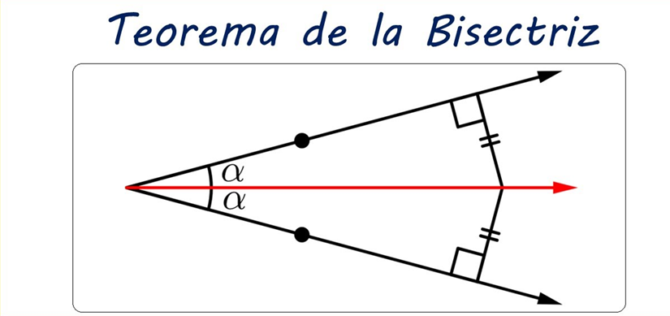
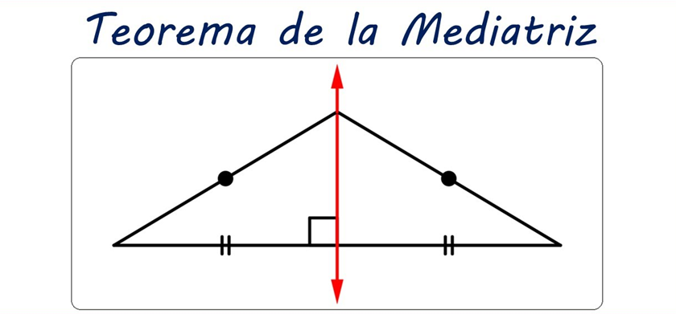

APLICACIONES DE LA CONGRUENCIA
TEOREMA DE LA BISECTRIZ
Todo punto que pertenece a la bisectriz de un ángulo equidista de los lados de dicho ángulo

TEOREMA DE LA MEDIATRIZ
Todo punto de la mediatriz de un segmento equidista de los extremos de dicho segmento

TEOREMA DE LOS PUNTOS MEDIOS
La base media es el segmento que une los puntos medios de dos lados y es paralelo al tercer lado y su longitud es la mitad de la longitud de la base